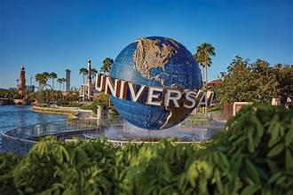
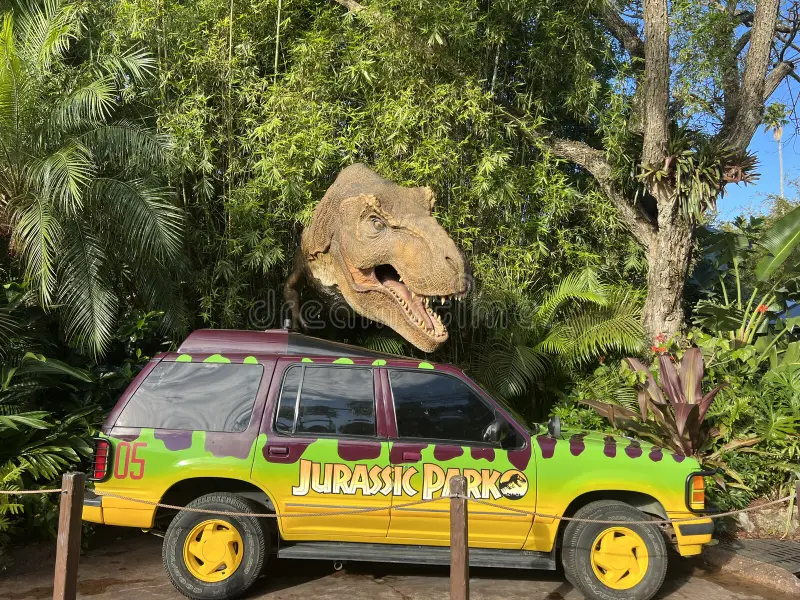

.png)
Orlando Universal Theme Park
6000 Universal Blvd
Orlando, FL 32819
(407)-363-8000
Orlando Universal Studios
Universal Studios theme park brings the magic of movies to life with its realistic attractions and themed areas. Visitors can explore worlds from iconic films such as Harry Potter, Jurassic Park, and Transformers. The park features heart-pounding roller coasters, 3D simulators, and live-action shows that entertain guests of all ages. Walking through the park, people can feel like they are part of their favorite movies and TV shows. Seasonal events and interactive experiences make each visit unique and memorable. A variety of dining options and souvenir shops add to the overall fun and convenience for families and friends. The park is designed to give both adventure seekers and casual visitors an unforgettable experience. From start to finish, Universal Studios combines storytelling, technology, and imagination to create a spectacular day of entertainment.

Isle of Adventures:Jurassic Park
Jurassic Park is a captivating area within Universal’s Island of Adventure that brings the prehistoric world to life. Visitors can explore lush, tropical landscapes designed to mimic the original movie settings, complete with life-sized dinosaur animatronics that appear incredibly realistic. The main attraction, the Jurassic Park River Adventure, sends guests on an exciting boat ride, culminating in a dramatic drop past a towering T-Rex. For younger visitors, the Camp Jurassic play area offers climbing nets, slides, and interactive dinosaur activities. The area also features mild thrill rides like the Pteranodon Flyers, offering suspended flight experiences over the park. Theming extends to food and merchandise, with dinosaur-inspired snacks and souvenirs that allow guests to take a piece of the adventure home. Throughout the park, sound effects and ambient jungle noises enhance the feeling of being in a living prehistoric world. Overall, Jurassic Park at Island of Adventure is a perfect blend of excitement, adventure, and nostalgic cinematic magic, making it a must-visit for fans of the series and thrill-seekers alike.
